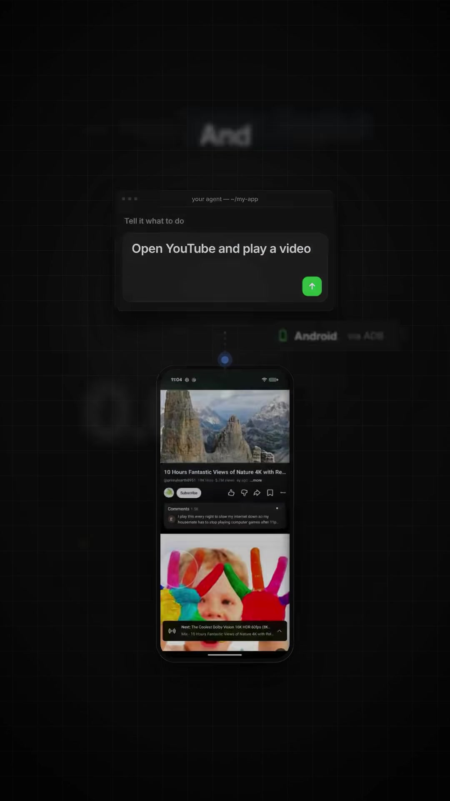
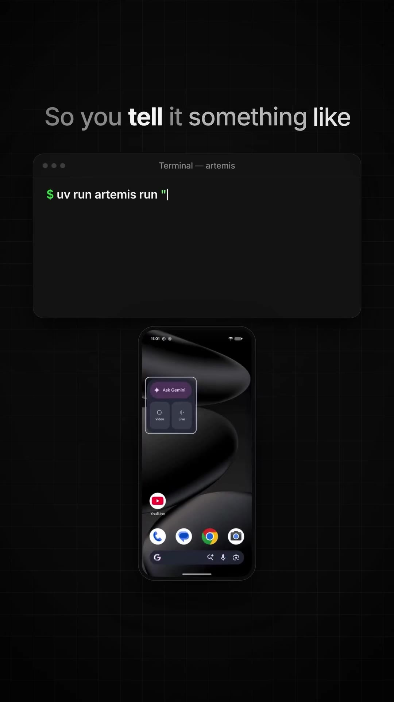
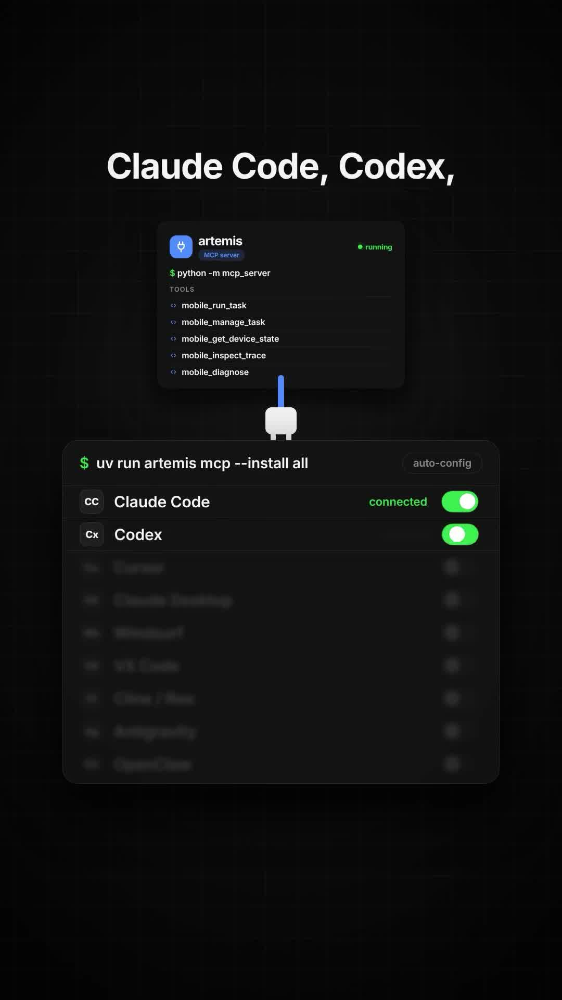
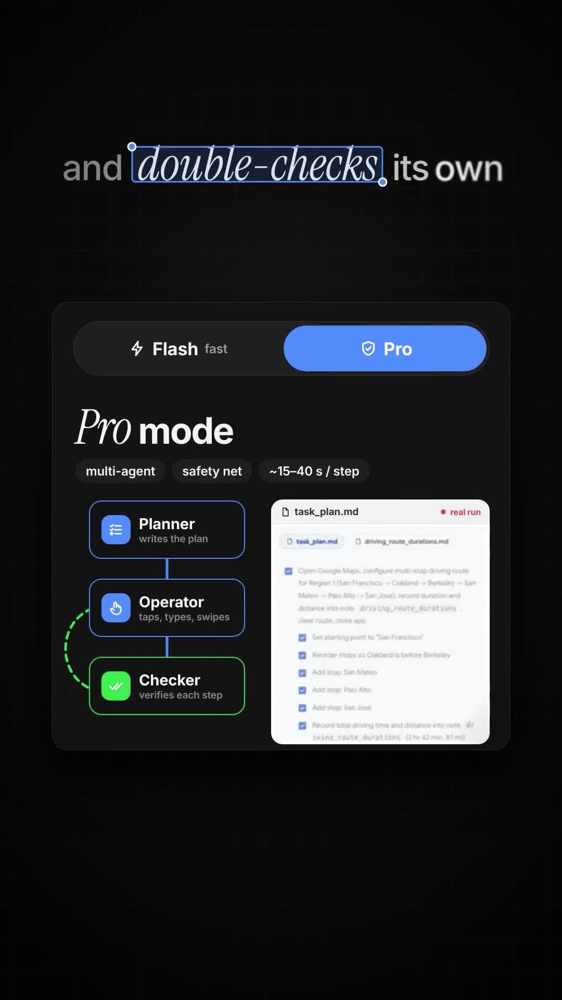
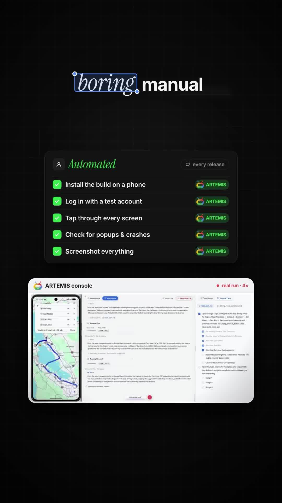

Executive Summary
Building autonomous agents for desktop and web browsers has matured rapidly, but automated interaction with native mobile operating systems has historically been notoriously brittle due to dynamic UI hierarchies, variable screen resolutions, and strict OS permissions.
ARTEMIS (google/artemis) is Google’s open-source mobile automation agent framework. It bridges multimodal foundation models with Android devices via the Android Debug Bridge (ADB), achieving a >99% task completion rate on the rigorous AndroidWorld benchmark.
Crucially for software engineering workflows, ARTEMIS ships with a native Model Context Protocol (MCP) server, allowing AI coding environments (Claude Code, OpenAI Codex, Cursor, Windsurf, Google Antigravity) to autonomously test, navigate, and debug physical Android devices and emulators during development.
Core Visual Architecture & Console


uv run artemis run "...".

task_plan.md) → Operator (UI interaction) → Checker (verification loop).
MCP Integration: Giving AI Coding Tools Android Access
Through the Model Context Protocol, ARTEMIS exposes a suite of specialized mobile agent tools directly to your IDE’s assistant context:
| MCP Tool Name | Parameters | Operational Capability |
|---|---|---|
mobile_run_task |
prompt, mode (flash | pro), device_id |
Dispatches high-level instructions to the target Android phone or emulator instance. |
mobile_manage_task |
task_id, action (pause, abort, inspect) |
Controls ongoing mobile agent sessions with asynchronous lifecycle management. |
mobile_get_device_state |
device_id, capture_screenshot (bool) |
Queries current foreground activity, view hierarchy XML, and visual viewport screenshot. |
mobile_inspect_trace |
task_id, include_logs (bool) |
Retrieves complete step-by-step reasoning logs, ADB touch coordinates, and error diagnostics. |
mobile_diagnose |
device_id |
Runs ADB connectivity checks, USB debugging verification, and permission validation. |
Auto-Configuring MCP for AI Coding Agents
# Install and link ARTEMIS MCP server to all detected coding harnesses
uv run artemis mcp --install all
# Or start the standalone stdio server manually
python -m mcp_serverDual Execution Engines: Flash vs. Pro Mode
ARTEMIS provides two specialized execution strategies depending on the latency and complexity profile of the task:
1. Flash Mode (~2–5 seconds per step)
- Reactive Single-Agent Loop: Uses a fast vision model to interpret current screen state, determine the next atomic action (tap, swipe, input text), and immediately execute it via ADB.
- Best For: Simple navigation (e.g., "open Settings and check battery percentage", "turn off Wi-Fi", "launch YouTube and play the first video").
2. Pro Mode (~15–40 seconds per step)
- Tri-Tier Multi-Agent Coordination:
- Planner: Deconstructs the goal into a stateful Markdown specification (
task_plan.md) outlining sequential preconditions and checkpoints. - Operator: Executes low-level gesture primitives (taps, drags, keyboard input, intent broadcasts).
- Checker: Takes screen captures post-action to verify that UI mutations match expected state. If an unexpected dialogue or crash occurs, it halts and triggers autonomous backtracking.
- Planner: Deconstructs the goal into a stateful Markdown specification (
- Best For: Multi-step workflows (e.g., configuring multi-stop driving routes in Google Maps, filling multi-page checkout funnels, testing user onboarding).
Multi-Agent Architecture Flow
┌─────────────────────────────────────────────────────────────┐
│ Task Request │
│ "Configure multi-stop route: SF -> Oakland -> Berkeley" │
└──────────────────────────────┬──────────────────────────────┘
│
▼
┌─────────────────────────────────────────────────────────────┐
│ Planner Agent │
│ - Synthesizes stateful execution roadmap `task_plan.md` │
│ - Establishes verification conditions for each waypoint │
└──────────────────────────────┬──────────────────────────────┘
│
▼
┌─────────────────────────────────────────────────────────────┐
│ Operator Agent │
│ - Inspects accessibility node hierarchy + UI screenshot │
│ - Translates goal to ADB coordinates (tap, input, swipe) │
└──────────────────────────────┬──────────────────────────────┘
│
▼
┌─────────────────────────────────────────────────────────────┐
│ Checker Agent │
│ - Evaluates post-interaction screen capture │
│ - Confirms stop added? Yes → proceed | No → retry/backtrack │
└──────────────────────────────┬──────────────────────────────┘
│
▼
┌─────────────────────────────────────────────────────────────┐
│ Completion & Diagnostic Log │
│ Outputs complete trace, duration metrics, and video run │
└─────────────────────────────────────────────────────────────┘Engineering Applications for Mobile Teams
- Autonomous Release QA: Replaces tedious manual smoke testing by installing fresh APK builds, logging in with staging credentials, tapping through every screen, and detecting unhandled crashes or modal traps.
- Automated Visual Regression: Captures synchronized multi-resolution screenshots across physical Android devices to detect layout overflow and clipping.
- Synthetic User Emulation: Tests complex user journeys under varying network and localization conditions without writing brittle Appium scripts.